1/48 scale MPM Tupolev SB-2M (ANT-40) Katyuska
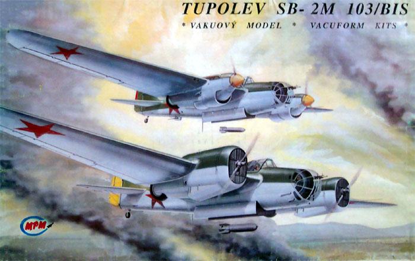
Kit #48021 Collector's Market Value
Images, model and text Copyright � 2003/2004 by Matt Swan
This built model has been SOLD
Developmental History
Developed in the early 1930�s by A. A. Arkhangelski under the direction of Andrei Nikolaevich Tupolev the SB-2 (Skorostnoi Bombardirovschik) was a truly revolutionary aircraft. Making it�s first flight on October 7th, 1933 the SB-2 was of all metal construction and featured such technological advancements as split flaps, hydraulically retracted undercarriage, pneumatic dampeners and brakes. The clean aerodynamic lines coupled with powerful M-100 engines with massive honeycomb radiators gave this high-speed bomber a top speed of 420 km/h at 9,400 meters. For its day it was well defended with a double nose .30 caliber gun, and an upper .30 caliber and lower hatch mounted machine gun. In later models the upper gun position was replaced with a powered turret gun position. One point of curiosity is that the original prototype of this aircraft flew with American built Wright Cyclone engines.
Derived from the MI-3 heavy fighter, the Katyuskas (�Little Katie� as it was soon to be called) first entered service in early 1936 and proved to be faster than the enemy fighters of the day. After the initial shock, enemy fighters adopted the tactics of loitering at high altitude and performing diving attacks to achieve higher speeds. While it�s great speed allowed it to enjoy a position of superiority for a while the introduction of the Messerschmitt 109 coupled with the SB-2s fuel tanks having a tendency to ignite and high levels of field maintenance drastically increased the number of casualties.
The SB-2 was the Soviet Union's main light bomber at the start of Operation Barbarossa, the German assault on the Soviet Union. 71 Of the 82 Bomber Air Regiments operated the type. However, all these aircraft were obsolete since the design was already well dated. The effectiveness of the SB-2's at night was good to excellent, but this could not prevent a staggering number of losses. From the 22nd of July 1941 untill the December counter-attack by the Soviets, the SB-2 force dwindled from about 1250 to 60 airworthy SB-2's. This gives the SB-2 the dubious reputation of being the aircraft that suffered the greatest losses of all during the Great Patriotic War.
In 1939 the SB-2 Bis derivative appeared with 990 HP Klimov M-103 inline engines and variable pitch three-bladed propellers. New engine cowlings and radiators were installed and the Navigator�s position was enlarged to accommodate dual controls. This version of the SB-2 was able to set a new world record in payload to height reaching 40,178 feet with a 2,204 pound payload. A considerable number of these aircraft were sent to Spain but were impounded by France on the French Frontier. Although these aircraft never saw service during the Spanish Civil War about 19 of them were used to establish the 13th Bomber Regiment at Los Llanos (Albacete) after the war and were in service until 1948.
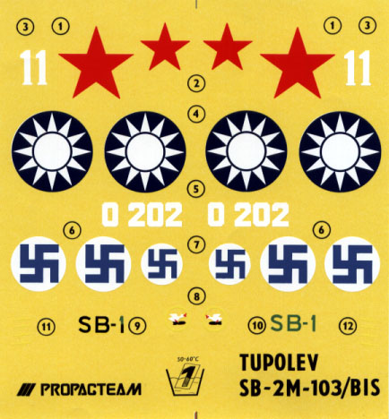
A total of 6,656 aircraft were built up to 1940 and many remained in Soviet service until 1943 despite heavy losses during the Great Patriotic War mostly from Me-109 opposition. The SB-2 saw action on all fronts in both strategic and tactical roles. Their actions included such missions as the bombing of the battleship Deutschland and the sinking of the cruiser Baleares. SB-2�s saw action in the Second Sino-Japanese war and the Soviet-Finnish war. The Finns captured 24 aircraft and used them against the Soviets during that action. The Chinese Air Force and the Czech Air Force used them (license built as the B-71) and even after they were withdrawn from frontline service they still fulfilled roles as transports, trainers and target tugs.
The Kit
These vacuform multi-media kits from MPM have been out of production for a very long time now and if you want one you have little choice but to shop E-bay for it. That is where this kit came from and upon examination I find that it is missing the engine cowlings for the M-100 version of the aircraft. Is this the fault of MPM or some intrepid modeler who possessed the kit in it�s unknown past? Hard to tell but for me it is not a major inconvenience as I had planned to build the M-103 Bis version right from the get go. (An update: I found out that only the first production runs of the kit included both engine nacelles. Later releases included only one set and you had to pay attention to the printed label {100 or 103} because the artwork was the same on both kits.)
Okay, now that that minor unpleasantness has been taken care of let�s take a look inside the box. We have five sheets of .04 (1mm) styrene stock (would have been six for a complete kit) that covers 22 major pieces of the aircraft including six different bulkheads. As we have seen with other MPM vacuform kits the panel lines show good definition and there are a multitude of little tiny vacuforming dimples scattered around the pieces. Specific body panels that will need to be removed around the nose and mid-fuselage have �X�s� engraved onto them to aid in identification.
There is a single sheet of clear vacuformed parts that show very nice raised framing and have very good clarity to them. There are six clear pieces on the sheet. This sheet is packaged in a separate plastic sleeve to prevent shipping damage. Also packaged in it�s own sleeve is a sheet of decals from ProPagTeam. Considering the time period that this kit was manufactured there were few if any model makers doing much with stencils and that follows with the se decals as well. There are the primary aircraft and national markings for three different aircraft; a Russian, Finnish or Chinese SB-2M can be modeled from this sheet. The registry of the decals looks very good but I cannot make any positive evaluation of color density at this time.
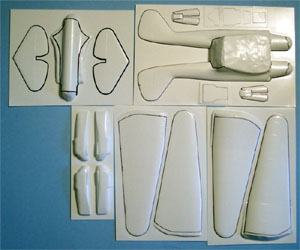
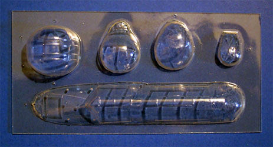
You can click on the Vac Parts layout for a larger image
MPM uses many different manufacturers to produce their kits and I do not know which specific company did the injection parts but it is apparent that they only have a small machine at their disposal. This can be seen in the manner that the injection molded pieces are cast in a compact circular fashion. This type of casting pattern is evident in the current MPM releases also. 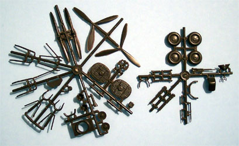
There are two sprues of injection molded polystyrene parts in the kit totaling 49 pieces. The plastic is a dark chocolate brown and slightly brittle so can is required when cleaning pieces. There is a fair amount of flash but it is of a fine nature and should present little problem to the modeler. Most of the pieces here are focused around the landing gear and engines with very little detail provided for the interior areas. Considering the large greenhouse that this aircraft displays, this lack of detail will be a problem. The modeler will need to scratch build the navigator�s position and add detail to the cockpit and gun turret.
The kit includes a small fret of brass pieces also. They include large honeycomb radiator covers for the M-100 version and smaller chin radiator covers for the M-103 version as well as a nicely detailed dashboard overlay. The fret includes seatbelts for the pilot�s position and several crosshairs for the different gun positions. There are 18 brass pieces on the fret. And finally there is a single acetate sheet to place behind the brass dash overlay for the instruments. Altogether I have 96 pieces in the box and if it had been a complete model with the alternative engine cowlings included, 100 pieces would have been the total count.
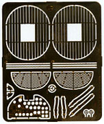
Conclusions
Mainline industry has not done a good job of representing the Russian aircraft involved in the Second World War until just recently and even now the selection is not great. This is a beautiful model of an aircraft that, for a short time, heavily populated the Russian bomber inventory. It is not a kit for entry-level modelers rather one that will require some skill with vacuforms and scratch building. To the best of my knowledge it is not available anywhere else in 1/48 scale and will make a fine addition to the modelers collection whether built or collected in kit form.
4/6/04
After months of prodding by another modeler who shall remain nameless (you know who you are  ) I have finally decided to start cutting some plastic. I had traced all the parts with a fine indelible marker when doing the box-review so that task is already out of the way. I jumped right into it and etched all the wing pieces and fuselage then snapped them right out. While the plastic in this kit is very heavy it presented no problem with just three passes of the razor. The standard process from this point would be to sand each piece down with a large sheet of 220-grit sandpaper. Doing this dry creates a lot of dust and doing it wet creates a lot of pasty sludge and both methods require a lot of elbow grease. I�ve been doing a lot of work with my Dremel over the last year and have found that I can use a sanding drum and run down the edge of the piece and get it within a few mils of the marker line then touch it up with the sandpaper � lots less elbow grease and a heck of a lot faster. Take note that I have had a lot of practice with the Dremel � don�t try this if you have not acquired a high degree of skill with the tool or you could cause irreparable damage to the kit.
) I have finally decided to start cutting some plastic. I had traced all the parts with a fine indelible marker when doing the box-review so that task is already out of the way. I jumped right into it and etched all the wing pieces and fuselage then snapped them right out. While the plastic in this kit is very heavy it presented no problem with just three passes of the razor. The standard process from this point would be to sand each piece down with a large sheet of 220-grit sandpaper. Doing this dry creates a lot of dust and doing it wet creates a lot of pasty sludge and both methods require a lot of elbow grease. I�ve been doing a lot of work with my Dremel over the last year and have found that I can use a sanding drum and run down the edge of the piece and get it within a few mils of the marker line then touch it up with the sandpaper � lots less elbow grease and a heck of a lot faster. Take note that I have had a lot of practice with the Dremel � don�t try this if you have not acquired a high degree of skill with the tool or you could cause irreparable damage to the kit.
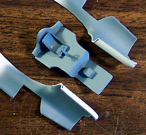
Next I cut out the interior pieces for the cockpit, this is a combination of four Vac panels that require a bunch of sanding, dry fitting, more sanding and dry fitting until they actually fit. I have the fuselage halves securely taped together for this process. Once they fit the fuselage well I glued them together and installed the pilot�s seat. I plan on doing this aircraft �gear up� so I have gone to the spares box and found a pilot figure that will fit in the cabin and am looking around for a few more crew figures. Meanwhile, these base pieces get a coat of a light flat blue similar to what you would fine in a MiG as seen in the shot to the right. While that dries I�ll cut some more Vac pieces out.
I�ve cut out the engine nacelles but have not opened up the wells (arrow #4) for the wheels until all the seams have set and been filled just to help maintain some structural strength here. I carefully measured and cut out a center hole for the propeller.
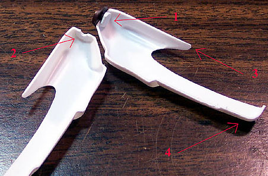
The base piece of the spinner does not have a shaft but just a short stub so I cut a piece of stock and glued it to that stub as a retainer (arrow #1). I test fit that and found there was still a little slop so I added a very thin fillet of plastic to the inside of the nacelle (arrow #2). And finally the top edge of the nacelle was sanded to a fine edge to blend into the wing surface (arrow #4). One more dry-fit to ensure that the propeller will spin freely and the nacelle halves can be glued together. The wings have had the trailing edges sanded to a feathered edge and then glued together. The elevator pieces have been assembled also. The paint has set up nicely on the fuselage interior so I have glued those two pieces together as well. The cockpit assembly will slide in from underneath later on in the process. The base panel for the rear fuselage turret got a major session of sanding and fitting then it was installed.
This thing is moving along very nicely. It is obvious that some putty will be needed in various places but overall, for an old Vac kit, it has been a very nice build. In this next shot the cockpit floor-pan is held in place with tape, the tail plane is simply slid into place. The wing test fits fairly well and so does the engine nacelle to the wing. I am a little concerned about the fit of the nose glazing that there may be a slight overlap but that may be premature, definitely something to watch as things progress. For a twin engined bomber this is a very small aircraft, I am also building a Tamiya P-51D and this is just slightly larger than the Stang.
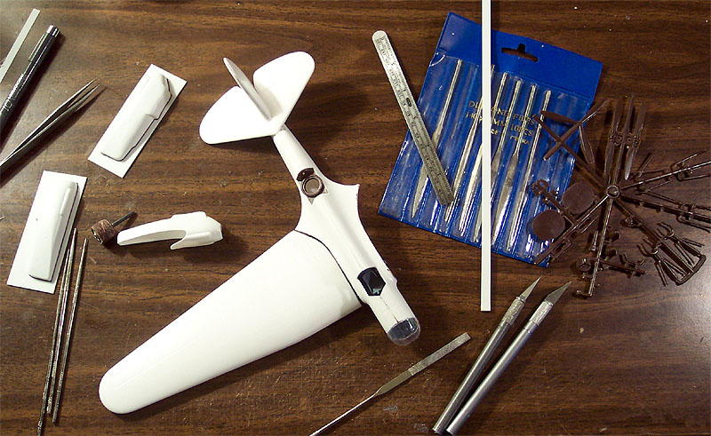
5/6/04
This kit sure started off at a good pace and things looked very promising but she is starting to show a more unpleasant side now. The first thing that came up was the lack of a forward bulkhead for the rear gunner�s position, well, that wasn�t so bad, a little styrene sheet and some careful cutting produced a bulkhead and it was solved. Next I started working on the dash. The injection dash has some real crappy instrument faces molded into it and does not meet up well with the brass piece so I cut a new back panel from stock sheet and sandwiched the acetate sheet in with the brass. So far it looked great. Once I tried to fit the thing into the fuselage it got real ugly. We�re talking Monday morning go back to work with a hangover ugly. There is no way this dash assembly was made to fit in this fuselage. It is way oversized!
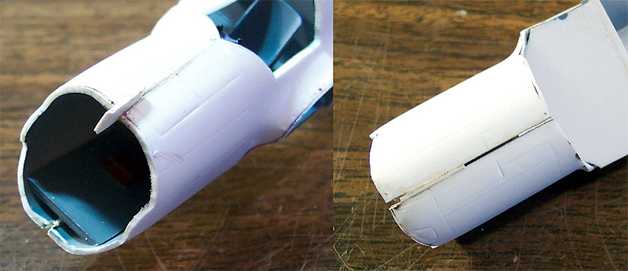
I had to cut the sides off, trim the top down, reshape the entire piece and remove nearly fifty percent of the assembly before it would fit in place and allow the pilot�s feet to clear. Fortunately, not too much of this will be visible once everything is closed up. This was two days of fitting and sanding and shaving but it was accomplished.
I have the primary floor pan completed and slide it in place to check fit from time to time. During one of these test fits I decided to cut the nose glazing out and test fit it. This piece seemed just a little oversized for the fuselage. After close examination I found that I needed to open the seam along the top and bottom of the fuselage and insert a few shims to widen things up. I have not cut out the top window for the bombardier yet and this is a good thing. I still have a decent amount of structural strength to help with the widening. Once the shims have been glued and cured I shaved off the excess plastic and prepared to fill the remaining gap with bits of plastic and some putty.
Speaking of putty � there is a lot of putty work going on in the back end of this baby. The fit for the elevator is very poor and I have to apply multiple layers of putty to fair the parts in properly. The tail has already three days of putty/sand time invested in it and will need at least one more before it looks acceptable. Yes, things have gotten quite ugly.
5/24/04
I usually keep about four different projects on my desk at any one time, doing a little here and there as my interest is peaked. Sometimes particular kits just seem to drag until they reach a point of critical mass and then I really charge ahead with them. This kit has not reached that point yet. I have toyed with the fuselage, off and on over several weeks, adding layers of putty to the tail fillet and cleaning up the seams in the nose. I did a little work on the bombardiers station with the nose gun mount and found the same issues that I had with the cockpit dash � things were way over scale and had to be cut down significantly to fit properly. While I have some really nice documentation for the cockpit I have not been able to bring myself to scratch-building any of that yet. In an effort to improve my level of interest in the build I have diverted to the wing/nacelle assembly.
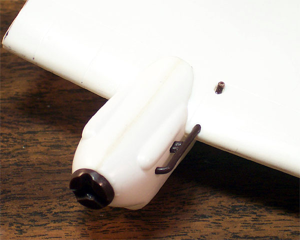
After many test fits of the engine nacelle to the wing I was almost ready to glue it in place. The last item I had to take care of was cutting out the wheel hole in the bottom of the wing. I used a Dremel cutting burr to open the basic hole then cleaned it up with a fresh Xacto blade. I glued one wheel together and used it to ensure that the hole was large enough and that the engine nacelle would line up properly then glued the nacelle in place. I�m going to have to do a little modification work to the landing gear strut for the visible parts in the retracted position but this looks to be a simple operation � famous last words.
The Russians did some different stuff with their exhaust manifolds. For some reason they seemed to like to go right through the wing leading edge with the exhaust and come out on top of the wing. You can see evidence of this in several old photographs of early Soviet aircraft. I�m sure this was a lot of fun with a wood and fabric structure. This aircraft has that same exhaust design. I spent a bit of time with various sized drills opening up holes for this. To make matters more difficult, the casting from MPM is really crappy, a lot of flash on this part and huge sprue gates so lots of clean-up work on the part was needed. I also drilled out the tip of the stack after all the flash; gate residue and mold separation lines had been cleaned up, only three more to go.
I made sure to angle my bit while drilling to create an oval opening. Once the holes in the wing were opened enough to slide the exhaust stack in I began the dry fit process. I could not get a good test fit without also opening holes in the engine nacelle for the input end of the stack but after a few attempts the stack slide into place. In the picture she is just setting in place and will be removed to facilitate the putty work that still needs done around the nacelle. Across the top of the nacelle you can see a beige line � that is the puttied seam from earlier construction. There have been quite a few tasks here that have required some skill and ingenuity to resolve but there has been some good news also, the Vac clear parts all have a cloudy look to them but once they were treated with Future floor polish they cleared up very nicely.
6/21/04
Yeah, progress is slow but it is consistent. This is how you get through those kits that just drag on � persistence. Every time you sit down at the modeling table perform some small task on that one beast of a project before moving on to the ones that are more attractive. So here are several little tasks that have led us to this point; one evening I decided to pull out the spares box and look for some stuff to dress up the cockpit area. I found some interior pieces to an old 1/48 Accurate Miniatures Mustang P-51 that contributed some side panels and a map case. When I did the He-111 Pedro conversion the side control panel from that kit had not been used so it joined the party. At some time in the past I had ended up with some spare back seat gunners hammock style seats from a 110 or maybe a Ju-87 and both of those went into the pile for consideration. I selected several different little switch panels and some grab handles I found on a sprue. To sum it up I simply dug through the box and set aside anything that looked interesting.
I selected the pieces that looked most appropriate when compared with the reference photos of the aircraft, did some slight modifications with a razor knife and attached them to toothpicks for painting. I removed the kit piece that was supposed to represent the bombardier�s seat and replaced it with one of the Ju-87 seats. After the accessory pieces were dry I worked them into place making sure to dry fit several times during the process. Two large panels were added to the pilot�s area and several smaller switch panels and a map case were added to the Bombardier�s station. I also added some grab handles around the interior. Once the dress up was complete I cut out the overhead bombardier�s window and dry fit the clear panel in place. Below, in picture #1 we see the floor pan dressed up with crew sitting in place. #2 is the pan in place but Bombardier is not in place yet and finally in #3 you can see some of the interior items and one of the grab handles. Once the Bombardier and nose gun are in place this area should be pretty busy. You need to keep in mind there is a lot of �artistic license� going on here � at no point am I saying any of this interior is accurate but is designed to give the impression of a busy front office, after all, this is going to be hanging from the ceiling when complete with gear up and the canopy will be closed.
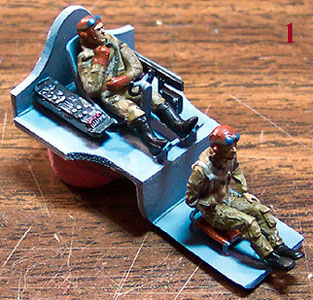
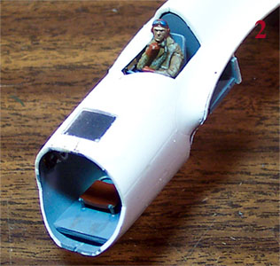
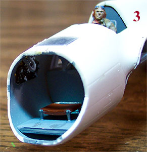
6/24/04
I think that I am getting �over the hump� so to speak with this kit now. I like the fit of the floor pan and go ahead and glue it into place. The figure I planned on using for the bombardier will not fit so I will have to slice up another figure and reposition the legs for this station � I�ll worry about that later, I�m just really thrilled to have the floor pan in place now. From here I can now place the Bombay/belly piece. As with any model and even more importantly with a Vac kit test fitting is a must. For this piece I think I must have test fit and sanded lightly ten or fifteen times before the surfaces lined up well and even then I ended up with one large gap. I glued several alignment tabs in place. On the front side I glued interlocking tabs on both the part and the fuselage and on the fuselage only for the backside (see picture below left). Once the glue had set on these tabs I placed the piece and glued it. I had to apply pressure at a few different points while the glue set. Now my basic fuselage is complete (see picture below and right).
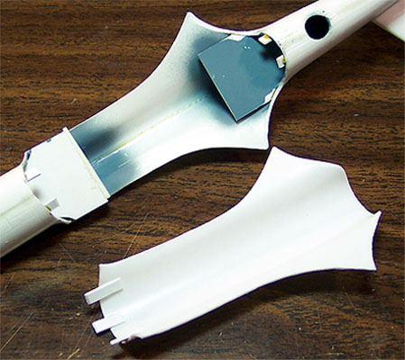
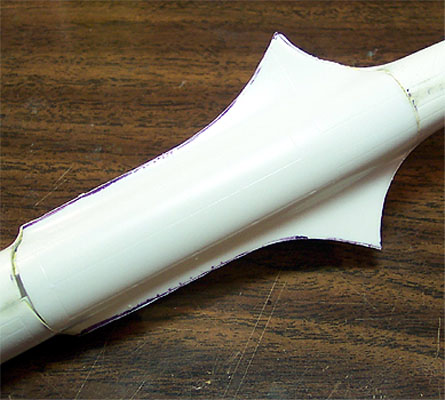
That went fairly well so I decided to start working on the wing to fuselage fit. I started by holding the assembled wing upright and sanding the mating edge smooth then going for the test fit. I worked the wing in this manner for about half an hour until I had a nice continuous fit then glued some alignment tabs to the inner surfaces.
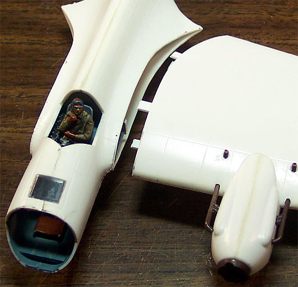
I had to pay attention to how the wing lined up with the edge of the cockpit floor pan so that the tabs cleared. I am not going to attach the wing yet as I still have some putty work to do around the engine nacelle and the other wing is not complete yet. I also have some work to do inside the landing gear bay. I had test fit one wheel to the strut assembly and found there is a major fit discrepancy here as well � guess I should not be surprised. I want to place the fuselage in a jig and attach both wings at the same time so that the dihedral and alignment is correct. This wing gets set-aside for the evening and the second wing has the engine nacelle attached and the exhaust manifolds worked into the leading edges. A couple of notes on the picture to the right, the exhaust manifolds are not glued in place yet and most likely will be removed for the painting process. The bombardier�s hatch/window is not glued in place either, simply pressed into place for the time being. While it only looks like there are three alignment tabs on the wing, in actuality there are four.
Looking at the engine nacelles there are brass radiator faces that must be attached to the front of each one and just like the dash board � nothing is lining up well. I think I will have to slice into the nacelle body and bury half the brass piece into the nacelle and then putty the edges to blend everything in. We�ll have some pictures of this mess shortly.
6/28/04
I think it�s time to deal with these radiator screens now. I start by taking my razor saw and slicing a groove through the front of the nacelle even with the face of the radiator housing. As I cut into the nacelle I stop several times and test fir the brass screen checking the depth. Once the topside of the screen is flush with the outside edge of the nacelle I stop and clean up the cut edges, see picture #1 below. Now the screen is placed into the slot and a few drops of superglue are placed behind it with a dental pick, see picture #2. A little accelerator is applied and then I can begin to apply putty to even the fit of the exterior edges. Normally I would use some acetone based fingernail polish remover on a cotton swab to smooth things out but just as I reached this point I discovered that my daughter had used all of my polish remover for, of all things, to remove her fingernail polish. Next thing you know I�ll catch my wife mopping the floor with my Future. I just don�t know about some people.
While this application of putty was drying I went around the nacelles filling any small imperfections then moved to the second wing and engine assembly and repeated these steps.
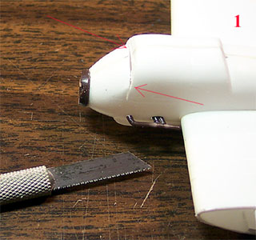
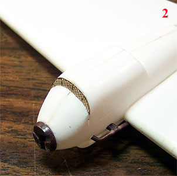
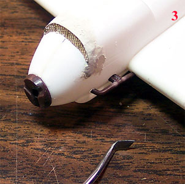
The putty has had twenty-four hours to dry and I have made a trip to the drug store to acquire another bottle of fingernail polish remover, it�s too late help with this application but at least I�m ready for the next one and this time I�ll hide the bottle.
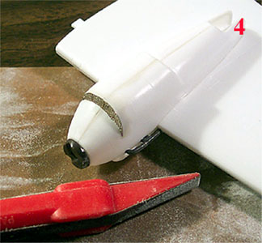
Starting with a sanding stick I removed the majority of the excess putty then shifted to progressively finer levels of sandpaper to finish it off. In picture #4 we have a finished engine nacelle. After both wings have been done I am ready to move on.
I have spent a little time on my bombardier/observer and he has been reassembled and is being painted � we�ll come back to him shortly. I had been thinking about painting the wheel well interiors and doing some other work in there prior to attaching the wings but I simply cannot wait any longer � the wings are going on now. I built up a little stand from sticks of pastel chalk and soda pop bottle tops to hold the tail in an elevated position and used more bottle tops to hold the wings while I aligned things. It was apparent that I was going to need to do some serious sanding on the bottom edge of the right wing so I removed the alignment tabs on that side to facilitate this. The left wing was attached using Tenax 7R and some superglue to fill some of the larger gaps near the trailing edge. A real large gap at the front was filled with some sheet styrene before being finished with putty.
In this picture below we can see the left hand wing in place and the right just prior to final fit sanding. Arrow #1 is where I had to fill a large gap with plastic shims and there is a close-up inset in the top right corner of the photo. Arrow #2 is where a slight step exists that will need some fill. Arrow #3 is where I have already filled a seam with superglue and shaved and sanded it smooth. Arrow #4 is where one of the bottom alignment tabs was removed to facilitate sanding. Looking to the stabilizer you can see my blocks holding it up for alignment checks.
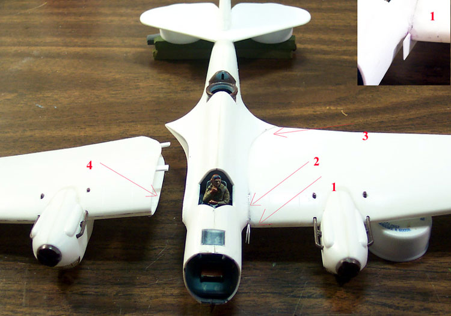
7/1/04
I replaced the alignment tabs along the lower side of the right wing structure and glued it in place. Just like on the left wing I needed to use a few plastic shims on this side also. Once the glue had set I shaved off the excess plastic from the shims then filled the large gaps with layers of superglue, sanding between applications and filled the smaller imperfections with squadron white putty � this time I had my fingernail polish remover on hand and was able to smooth things out nicely so very little sanding was required. Overall I had one entire evening of modeling tied up in sanding these seams down. I had to make at least one additional putty application to finish filling all the little dips and grooves and by time the primer is done, I may find that just a little more will be needed.
Once the major sanding was out of the way I turned my attention back to the wheel wells. I have no clue what color those wells are supposed to be, cannot find any reference that makes mention of it or any color photos to help me out. I considered using either aluminum for a natural metal look or PRU blue for a Russian primer look. I settled on the blue, loaded my airbrush and put as good a layer as possible to the interior well areas. Any excess that ended up on the exterior was wiped off with a paper towel wet with some Windex (I�m using an acrylic paint).
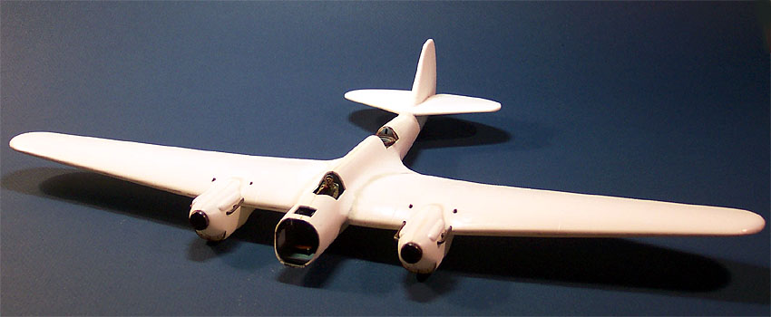
After the interior paint had dried I stuffed all the openings with tissue paper adding a drop of water here and there to help it conform. As a primer I am using Model Master Gray enamel primer cut 50/50 with lacquer thinner. Cutting the enamel paint with lacquer thinner allows it to bite into the plastic and will result in fewer problems later on when masking. In essence � the primer is now welded right onto the base plastic.
7/5/04
It certainly has been a busy few days, the first coat of primer has had a day to cure and then the defects that showed up in the seam work had to be repaired. A second coat of primer was applied and shortly after that I coated the lower half of the model with Model Master Light Gray 36495. After this had dried overnight I did a little work on the ventral gun position. The 103 version of this aircraft had a small ventral bubble with a hand-operated machinegun installed. The clear Vac sheet provides a bubble for this, which was a real pain to cut out � it has an open, pie slice hatch in the middle of the bubble that really tests your skill with a scalpel to remove. To make matters even more entertaining the bubble has a flat mounting surface where as the fuselage it is supposed to mount to is curved. To fix this I elected to install a small mounting lip on the fuselage formed from some thin sheet stock. I placed the bubble over the gun opening and traced the outline with the tip of my Xacto blade and glued the stock sheet to this outline. Once the glue had set I sanded the lip flat and test fit the bubble � worked like a charm. Below left is the lip just after sanding and to the right is with the bubble resting in place. All the gun and mounting hardware for this position will have to be scratch built as the kit does not provide any of it.
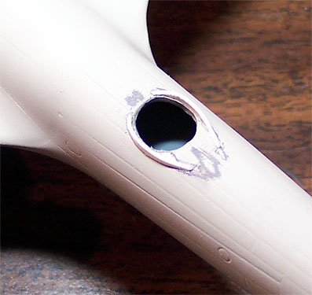
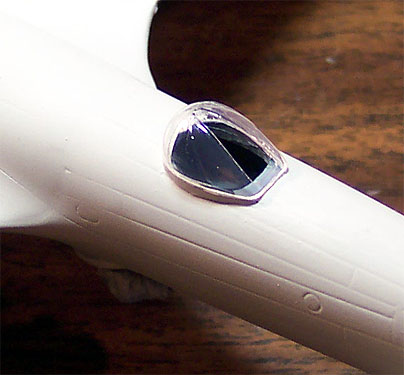
Motivationally speaking I really need to see some color on this bird so I move straight onto masking for the Flat Olive topcoat. This is a pretty easy task as all the lines are straight and have a hard edge so standard masking tape is adequate for the job. Since all the exterior paints I�m using are enamels cut with lacquer thinner I have no worries about lifting paint with my masks. The topcoat is Testors Flat Olive 1165, I opened a fresh bottle for this and mixed it like I always do, 50/50 with lacquer thinner but when I started to airbrush the paint began to clump in the airbrush and it spit a bunch of crap onto the wing. I checked my mixing bottle and sure enough � paint clumps forming everywhere. Fortunately I had a second new bottle and opened that. This one behaved normally and I finished the first coat of color. After this coat had dried a few hours I lightly sanded the crap off the one wing and re-shot it. I don�t know what the issue was with the first bottle of paint but it did not slow me down much at all. Below left you can see the model with the second coat of primer, the propellers painted and the bombardier/observer finished. To the right you can see it with the masks and tissue removed.
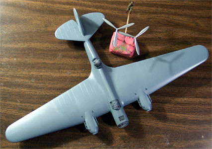
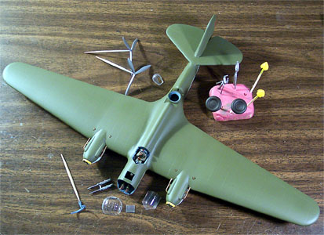
You can click on these images to view larger pictures
She sure has come a long way. Take note of the ventral bubble and that pie slice window I was talking about. Another item of note is the nose glazing, the gun slots were a real pain to open up. I ended up using a razor saw to create an initial opening then using surgical snips to carefully cut the rest of the plastic out then finishing it with a flat diamond file � very delicate work and no room for error.
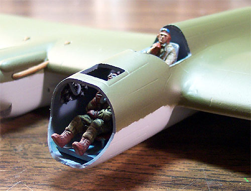
Now those feet sticking out of the nose are not the pilot�s, the bombardier/observer is now in position and I will soon begin the final detailing of the nose compartment. A quick test fit of the guns tells me that they are slightly oversized and will have to be modified to fit. I really have to wonder about the injection pieces in this kit � none of them seem to fit for crap.
There�s still a lot of work to be done here. I�ll be moving on to the landing gear and the nose compartment next and while those areas are drying I�ll shoot another coat of flat red onto the tail fin. I still have to go back to those radiator grills and add some color there as well.
7/6/04
I think one of the most important requirements needed before anybody begins a Vac kit is that there be a good box of spare parts available. I have several, there is one small box devoted strictly to figures, another containing all the odd photo etched stuff that�s left over from previous builds, a growing box of decal odds and ends and a rather large box of plastic pieces that includes a gallon zip-lock bag full of clear parts. Most times this stuff just collects dust but when you need something � boy does it help.
The base interior of this kit is sparse to say the least, the only items included were a dash, a pilot seat, a control yoke, seat belts and a very basic bombardier�s stool. The front guns and an oversized stand were provided for the nose area. I had to cut the guns in half and remove 1/16th of an inch from the breech end and then reassemble. The gun stand had to be cut down and the cross member had to be shortened to fit. From here I added;
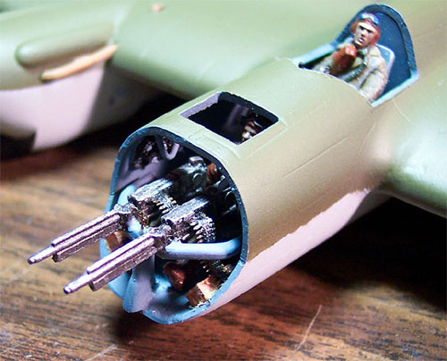
Pilot figure from spares box cut apart and repositioned.
Bombardier figure from spares box cut apart and repositioned.
Cockpit side panels from spares box.
Rudder pedals from spares box.
Map case in nose from spares box.
Switch panel in nose from spares box.
Replaced Bombardiers seat from spares box.
Install handgrips from spares box.
Small instrument panel in nose from spares box.
Ammo belts from PE spares box.
Ammo boxes scratch built from stock styrene.
Kit gun barrels drilled out.
So, what do you think? Does it look pretty busy in the front office? A thought occurs to me, look at how that guy is crammed in to the nose with his only access that small hatch overhead. Now try to imagine the left engine on fire, the pilot is losing control and getting ready to ditch and you need to get out right now. Can you say �pucker factor�?
7/12/04
It�s getting close to the end now and the anticipation is building. I went over the paint scheme and touched up the demarcation line between the Olive Drab and the Light Gray and attached the tail wheel. The propellers had been painted a few days ago and so had the spinner covers so these were both mounted onto the model. Each spinner cover got dry brushed with some steel around the tip and will get some wash after the Future coating has been applied.
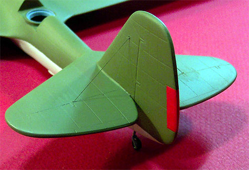
After spending so much time working on the nose I decided to move to the tail for a while. The rudder trim tab was masked off and sprayed with Testors Flat Red. From here I need to install the structural support wires for the elevator, I drill a small hole completely through the elevator on each side and through the rudder. There are two wires on the lower side of each elevator and only one above so I thread two pieces of .004 invisible thread through the elevator and one from each side through the rudder. The lower side ends are secured with superglue then they are pulled snug through the elevator and that hole is glued. Next the remaining threads are pulled from opposite sides through the rudder and glued. Now the excess is trimmed off and the glue spots are paints as are the threads.
Final details are being addressed now, the aerial has a hole drilled out and its glued in place and so to is the pitot tube. It's always different how the final assembly goes together with the clear parts, sometimes they are best placed before the final paint finish and other times they are best placed after - for this build I feel that placing the clear parts last will work best. After a careful wipe-down with my Micro Sheen tack cloth and final inspection for any visible flaws she is ready for her first coat of Future floor polish. I still have to work on the dorsal gun turret; this piece is a clamshell assembly of clear Vac parts and oversized injection pieces and is sure to cause a severe headache. The ventral gun position needs to be built almost completely from scratch and will probably provide yet another headache. For today though, here she is on the way to the paint room.
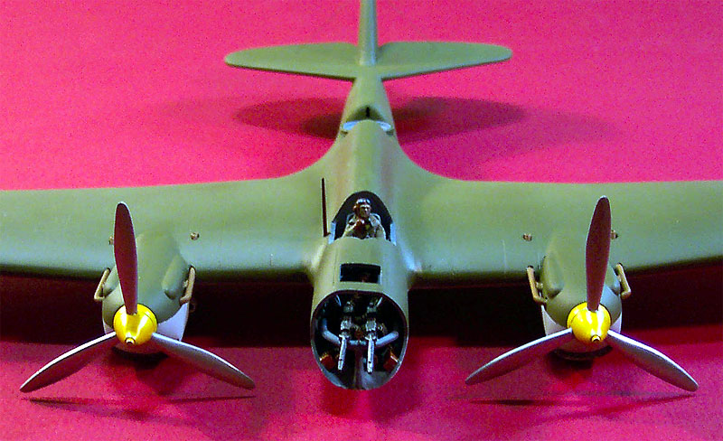
7/23/04
I applied about three coats of Future floor polish to this over two days, coating first the bottom then the top. After the Future had dried I found two spots that had runs, this was easily repaired with a cotton swab dipped in Windex. I simply rubbed the offending spot until the Future thinned down to the surrounding areas and it looked fine. The decals were applied next. The kits decals are very brief, very thin and don�t have a great level of color density. I would compare them to something you might find in an early ICM kit. They reacted well to setting solutions and were sealed with another coat of Future applied with a wide soft brush.
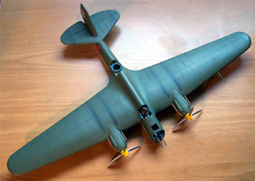
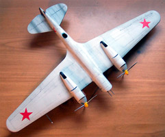
Now I am ready to begin the wash process. I�ve mixed a sludge wash from Grumbacher black paste; Higgins water soluble brown ink, two drops of liquid dish washing solution and about ten ml of tap water. This is brushed over the panel lines with a lettering brush, allowed to dry (about 5 minutes) then wiped with a tight pad of paper towel slightly dampened and held in a set of locking tweezers. I try to wipe from front to back to simulate the airflow patterns reflected in normal dirt and liquid that the aircraft would be subject to. I worked in small sections and spent around a week on this process. I did work on some other models in between times so it�s not like I spent 40 hours just washing this baby. You can click on those pictures to the right to view full sized images.
Once the wash was complete the model wash sealed with two coats of Polly Scale clear flat. I used some Tamiya X-19 Smoke to lay down the base of the exhaust stains across the tops of the wings and on both sides of the elevators. I say �base� because the very last thing I will do is to brush some ground chalk across this area to finish the effect. All that is left to do now is to mask and paint the clear parts, which will include building the top turret interior and dorsal gun details.
7/26/04
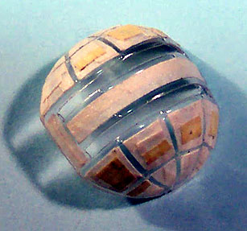
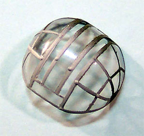
I wish Black Magic made a mask set for this, I can tell you that for nothing. What a pain in the butt and the clear plastic for this is cloudy. I have treated it twice with Future and was able to clean it up a little but this European clear polystyrene just plain stinks. I spent nearly three hours masking the nose cone with thin strips of masking tape then airbrushed it with some PRU blue for a little interior color then applied the exterior colors.
I also masked the pilot�s canopy and the top hatch for the bombardier and painted them in the same manner. The pilot�s canopy needed a little fill around the edges with some clear parts cement to blend it in properly, the top hatch piece fit into place very nicely but the nose, well the nose had a few problems. I ended up laying a fine bead of superglue along the top edge of the fuselage, holding the clear part in place with one hand while applying a little accelerator on a paint brush with the other hand and stabilizing the model with the other hand�. Wait, that�s too many hands. You get the picture? Once she was tacked in place I ran a fine bead of clear parts cement around the perimeter and blended the edges of the glue with my fingertip.
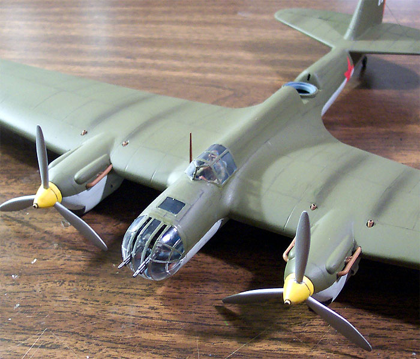
That slightly milky look really bugs me, kind of makes me think Igor had a little too much borsht before he got on board or maybe it�s simply a scale representation of fogged windows due to the local climatic conditions � yeah, I like that. If anybody asks that�s my story and I�m sticking to it. With that slightly furrowed brow on the pilot he could be wondering why his defrosters are not working. Anyway, three pieces are done, three more to go. I think it�s about time to tackle that bulbous dorsal gun turret, wouldn�t you say?
8/2/04
This is it, the last update for this build. It certainly has been a long haul to get here, almost four months to the day but success is at hand. I had no choice but to deal with that bulbous gun turret by this time and it was a beast. This is a two-piece assembly with a front and a back. Fortunately the seam runs right along a frame line so it could be worse. I cleaned the individual vacuformed parts as best I could from the sheet then test fit them. The bottom edge was quite a bit out of line from front to back but I had left some excess on the parts � good thing I did so there was room to work in correcting the fit. Once I was satisfied with the fit of the two pieces I taped them together and tested the fit to the fuselage. This was good so I went for the glue.
I don�t know if I mentioned it before or not but I dipped these pieces in Future (twice) and allowed it to cure before coming to this point. I began to glue process with some superglue, putting two very small drops into the outside corners of the seam and immediately hitting it with some accelerator so it would not fog. Next I moved to the seam edge at the gun channel and repeated this. Now I could go for a slower setting and safer glue like Testers Clear Parts cement. I laid in a fine bead of this across the interior and exterior and set it aside to cure.
I intend to use the kit provided gun and upper gun mount for this position but need a crewman and gun mount post. In my spares box I found a old Bandai standing German Tank crewman and converted him by cutting his head off and replacing in with the head from my original choice bombardier (remember, he would not fit correctly) and chopped his legs off at the knees to fit inside the turret.
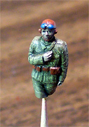
Nothing will be visible from below the waist and the cut zone gave me a great surface to glue him to the interior fuselage former. I cleaned up a piece of sprue to make my gun mount stand and adjusted the length to put the gun in the proper position to the gunner. Gunner and gun mount were installed into the aircraft and I was able to return to the spares box to search for stuff for the belly gun position, which the kit provided nothing for beyond the clear vac dome.
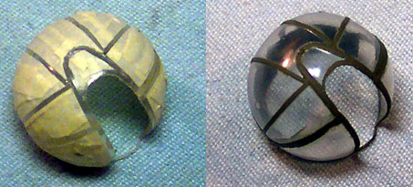
I settled on an old white metal machine gun left over from the Fw-200 build and scratch built a gun mount to fit into the belly of the beast. Now that the top turret pieces have had some time to cure I can mask them. Just like the nose section this is all done with thin strips of masking tape. A fresh razor knife is a must during this process. I spent about four hours masking this piece then was able to paint. It got a coat of PRU blue then an overlay of Testers Flat Olive. The masks were removed and the seam was checked one more time for defects and she is ready to place on the model. I flexed the dome just slightly to get it over the gun mount and glued it in place with clear parts cement. The machine gun was placed with a drop of superglue. The ventral gun dome was finished in the same manner as the top turret and was placed overtop the white metal machine gun and secured with more clear parts cement. With the model sitting on some paint jars I brushed a little ground pastel chalk across the exhaust stains and blew the excess off with a little air. That�s it �. It�s done. That finish just kind of snuck right up on us, didn�t it?
Since this is an in flight model I am shooting everything on a blue screen so I can pick my favorite shots and place them over some generic sky back grounds.
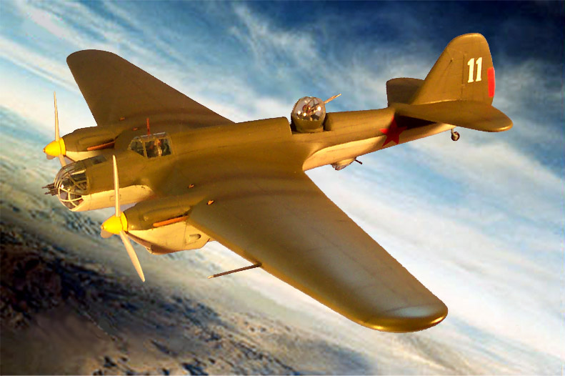
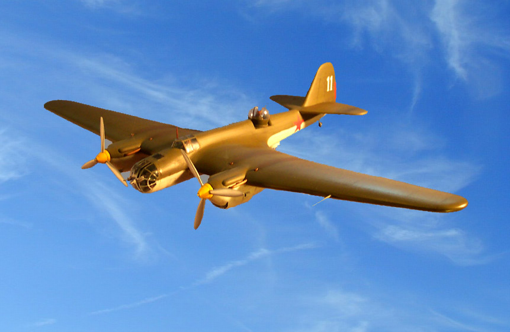
Here are a few detail shots, first the nose and then the belly
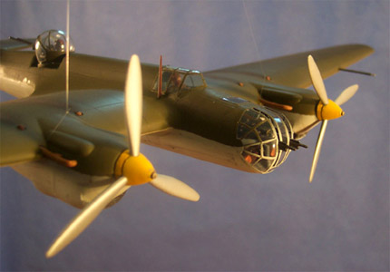
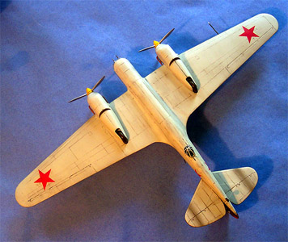
You can click on the images above and below to view larger pictures
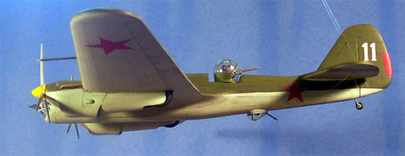
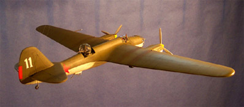
What a wild and crazy ride this has been. I hope you enjoyed it as much as I have.


{kind=link}
{kind=link}
{kind=link}
{kind=link}
{kind=link}
{kind=link}
{kind=link}
{kind=link}
{kind=link}
{kind=link}